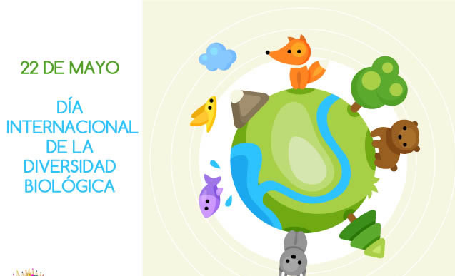
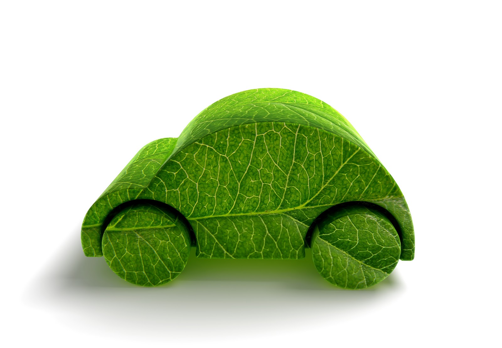
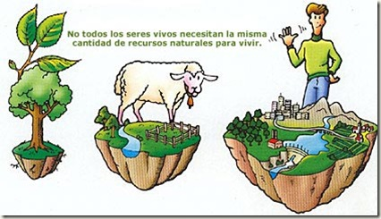
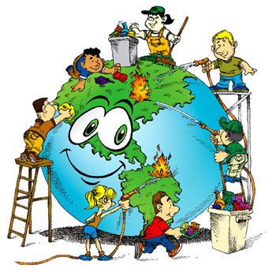
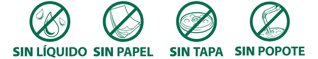

Proyecto
"¡Cuidamos el Planeta!"
Anayenci López Flores.
"¡Cuidamos el Planeta!"
Anayenci López Flores.
El 22 de abril de cada año se celebra el nacimiento del movimiento ambientalista moderno, el cual se inició en 1970 cuando 20 millones de norteamericanos tomaron las calles, los parques y los auditorios para manifestarse por un ambiente saludable y sustentable
.jpg)
El Día de la Tierra de 1970 logró una coincidencia política que parecía imposible. Ese día condujo a la creación de la Agencia de Protección al Medio Ambiente de Estados Unidos y a la aprobación de leyes relacionadas con el aire limpio, el agua limpia y la conservación de especies en peligro de extinción. A partir de entonces, cada año en esta fecha, el mundo entero reflexiona y se moviliza por una Tierra mejor.
Hasta este siglo pocos pensaron que los seres humanos, viviendo en una extensión de tierra aparentemente sin límites y con agua abundante, podrían causar daños irreparables al medio ambiente. Sin embargo hoy los gobiernos y la gente en general en todo el mundo luchan con la erosión costera, los derrames de petróleo y la contaminación del agua potable, en tanto que cuestiones como el crecimiento de la población, la deforestación, la lluvia ácida y la posibilidad de rápidos cambios climáticos significan decisiones difíciles para el futuro.
.jpg)
En 1975 un grupo internacional de estudio reunido en Belgrado, Yugoslavia, propuso un marco de referencia mundial para la educación ambiental, el cual se llamó la "Carta de Belgrado". Esta Carta afirma que la meta de la educación ambiental es hacer que la población mundial se preocupe por el medio ambiente y tenga el conocimiento y la dedicación que la capacite para buscar soluciones a los problemas actuales y prevenir problemas nuevos.

.jpg)
.jpg)
La diversidad biológica es la variedad de formas de vida y de adaptaciones de los organismos al ambiente que encontramos en la biosfera. Se suele llamar también biodiversidad y constituye la gran riqueza de la vida del planeta.
.jpg)
Si bien cada vez somos más conscientes de que la diversidad biológica en un bien mundial de gran valor para las generaciones presentes y futuras, el número de especies disminuye a un gran ritmo debido a la actividad humana.
La Convenio sobre la Diversidad Biológica Documento PDF es el instrumento internacional para «la conservación de la diversidad biológica, la utilización sostenible de sus componentes y la participación justa y equitativa en los beneficios que se deriven de la utilización de los recursos genéticos», que ha sido ratificado por 196 países.
Dada la importancia de la educación y la conciencia públicas para la aplicación del Convenio a todos los niveles, la Asamblea General proclamó el 22 de mayo, fecha de la aprobación del texto, Día Internacional de la Diversidad Biológica, mediante la resolución 55/201 Documento PDF de 20 de diciembre de 2000
.jpg)
La conciencia ambiental puede definirse como el entendimiento que se tiene del impacto de los seres humanos en el entorno.
Es decir, entender como influyen las acciones de cada día en el medio ambiente y como esto afecta el futuro de nuestro espacio.
Sin ser alarmista, conciencia ambiental, por ejemplo, es entender que si yo, ciudadano común, derrocho algún recurso natural, como puede ser el agua, mañana cuando quiera volver a utilizarlo ya no voy a poder.
Muchas veces, al hablar de problemas ambientales se nos viene a la cabeza la destrucción de la capa de ozono, el calentamiento global, el alarmante aumento de la generación de residuos.
Pero no vemos una relación directa entre nuestras acciones diarias y estos acontecimientos.
Quizás, hablando sobre la eficiencia energética que tienen que lograr las industrias argentinas para no caer en una falta de suministro, estamos con todos los aparatos electrónicos que no estamos usando en stand-by, realizando un consumo sin mejorar en absoluto nuestra conformidad.
.jpg)
La huella ecológica es un indicador que se define como "el área de territorio ecológicamente productivo (cultivos, pastos, bosques o ecosistemas acuáticos) necesaria para producir los recursos utilizados y para asimilar los residuos producidos por una población dada con un modo de vida específico de forma indefinida".


.jpg)
Se denomina contaminación ambiental a la presencia en el ambiente de cualquier agente (físico, químico o biológico) o bien de una combinación de varios agentes en lugares, formas y concentraciones tales que sean o puedan ser nocivos para la salud, la seguridad o para el bienestar de la población, o bien, que puedan ser perjudiciales para la vida vegetal o animal, o impidan el uso normal de las propiedades y lugares de recreación y goce de los mismos. La contaminación ambiental es también la incorpo- ración a los cuerpos receptores de sustancias sólidas, liquidas o gaseosas, o mezclas de ellas, siempre que alteren desfavorablemente las condiciones naturales del mismo, o que puedan afectar la salud, la higiene o el bienestar. A medida que aumenta el poder del hombre sobre la naturaleza y aparecen nuevas necesidades como consecuencia de la vida en sociedad, el medio ambiente que lo rodea se deteriora cada vez más. El comportamiento social del hombre, que lo condujo a comunicarse por medio del lenguaje, que posteriormente formó la cultura humana, le permitió diferenciarse de los demás seres vivos. Pero mientras ellos se adaptan al medio ambiente para sobrevivir, el hombre adapta y modifica ese mismo medio según sus necesidades.

Es la producida por los humos de los vehículos e industrias, aerosoles, polvo, ruidos, malos olores, radiación atómica, etc. Entre los contaminantes gaseosos más comunes encontramos el dióxido de carbono, el monóxido de carbono, los hidrocarburos, los óxidos de nitrógeno, los óxidos de azufre y el ozono. Para la organización Ecologistas en Acción, las principales causas de la contaminación del aire están relacionadas con la quema de combustibles fósiles (carbón, petróleo y gas). La combustión de estas materias primas se produce en los procesos o en el funcionamiento de los sectores industrial y del transporte por carretera, principalmente.
.jpg)
Es la producida por el vertido de sustancias químicas y basuras. Cuando acumulamos basuras al aire libre en un mismo lugar durante mucho tiempo, parte de los residuos orgánicos fermentan y se filtran a través del suelo, sobre todo cuando éste es permeable. Al dejar pasar los líquidos, contamina con hongos, bacterias y otros microorganismos patógenos el suelo y las aguas (superficiales y subterráneas) que están en contacto con él, afectando a las cadenas alimenticias. Los plaguicidas utilizados en la agricultura son otro de los principales contaminantes del suelo. Uno de los insecticidas más usados es el DDT, que puede mantenerse por 10 años o más en los suelos sin descomponerse. Los fungicidas, por ejemplo, incluyen contaminantes como azufre y cobre. La actividad minera también contamina los suelos a través de las aguas de relave, que contienen elementos químicos como mercurio, cadmio, cobre, arsénico, plomo, etc.
Según la Organización Mundial de la Salud (OMS), el agua está contaminada cuando su composición se haya alterado de modo que no reúna las condiciones necesarias para ser utilizada beneficiosamente en el consumo del hombre y de los animales. La contaminación del agua afecta a ríos, acuíferos y mares, que se convierten poco a poco en verdaderos basureros. La contaminación por nitratos en las aguas subterráneas se debe a la infiltración de los fertilizantes agrícolas, La contaminación del suelo es la producida por el vertido de sustancias químicas.
Apartir de actividades cotidianas como transportarnos, asearnos, viajar, cocinar o comprar productos, y los impactos de éstas en el ambiente, es importante reflexionar en nuestros hábitos de consumo y actitudes hacia el cuidado y protección del ambiente.
En nuestra casa, trabajo, comunidad o escuela podemos iniciar actividades concretas para mejorar el entorno. Para lograrlo necesitamos observar nuestro alrededor e identificar alternativas menos dañinas al ambiente, cambiar conductas y tomar decisiones basadas en el mejoramiento de la calidad de vida.

El término Calentamiento Global se refiere al aumento gradual de las temperaturas de la atmósfera y océanos de la Tierra que se ha detectado en la actualidad, además de su continuo aumento que se proyecta a futuro.
.jpg)
